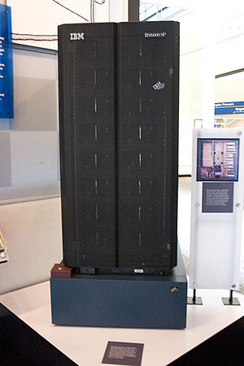
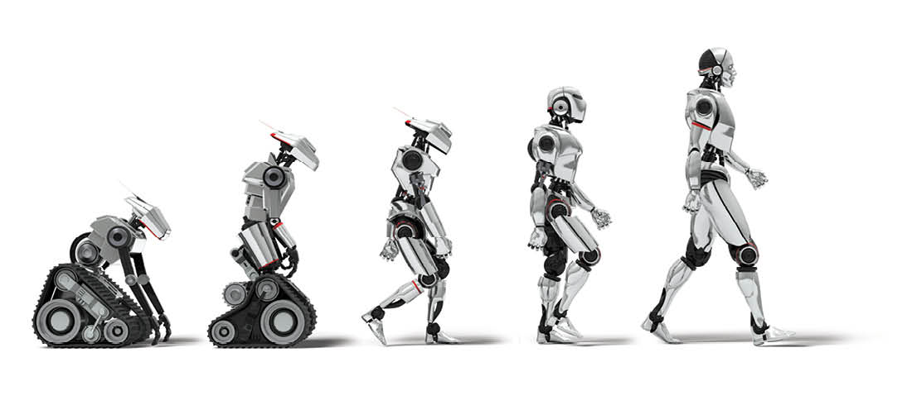

Los robots que poseen ese tipo de Inteligencia Artificial conservan millones de datos por un tiempo limitado que ocupan para tomar mejores decisiones. Interactúan parcialmente con la realidad y se diferencian de las máquinas reactivas en que utilizan esos datos para funcionar de forma adecuada con respecto al entorno. Aunque comprenden el universo para el que están programadas como un todo complejo, su memoria es de corto plazo y no almacena experiencias para "aprender" de ellas, como ocurre en el proceso cognitivo humano. Los automóviles autónomos funcionan a través de este procedimiento: la memoria trabaja almacenando datos como la velocidad, el terreno, semáforos, las curvas y los demás automóviles en la carretera. A partir de ellos, el piloto automático decide a través de algoritmos cuál es la mejor ruta según los parámetros de eficiencia, rapidez y seguridad; no obstante, es incapaz de aprender de distintos escenarios y conductas de los demás conductores y aplicarlos en situaciones específicas.
|  |
|  |